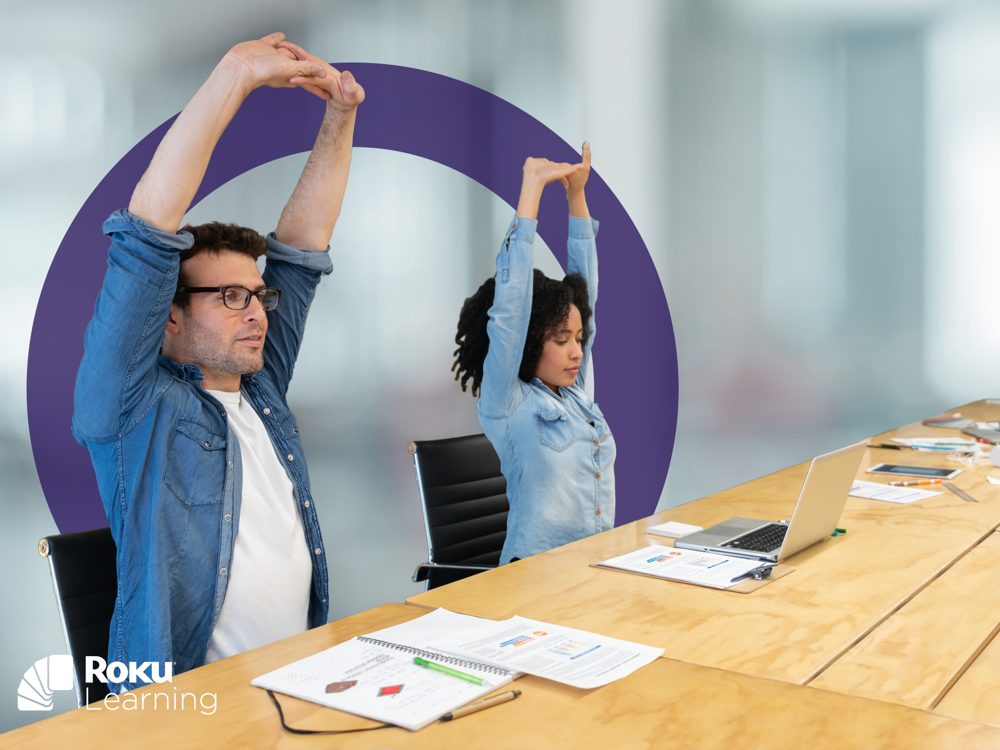
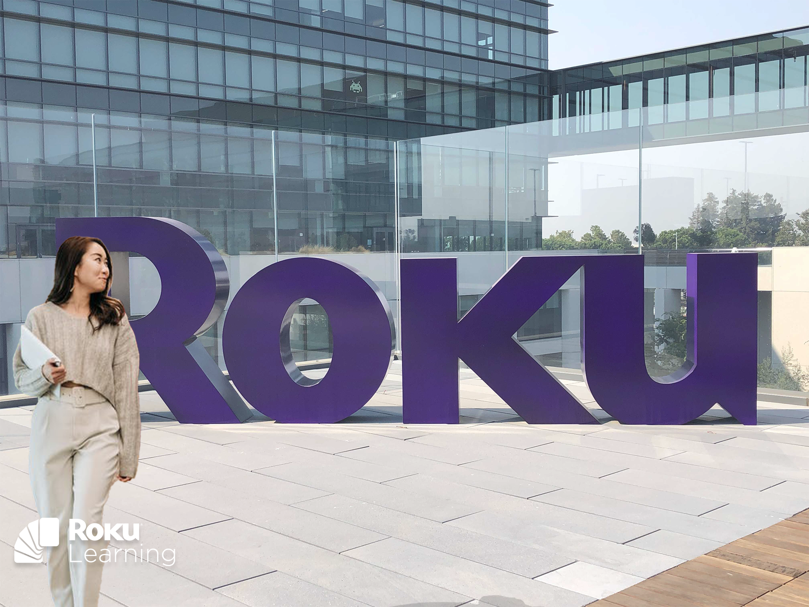

At Roku, I partnered with Human Resources and subject matter experts to develop a workplace wellness education program that supported employees' physical well-being, mental health, and long-term resilience in a fast-paced technology environment.
Rather than approaching wellness as a collection of standalone resources, the program focused on helping employees build practical habits that supported both personal well-being and sustainable performance. Topics included stress management, mindfulness, ergonomics, healthy work practices, and work-life balance. The learning experience combined instructional strategy, visual communication, multimedia production, and learner-centered design to make wellness resources approachable, engaging, and immediately applicable to everyday work.
The examples below represent a selection of the videos, graphics, and learning assets created as part of Roku's broader employee wellness and workplace well-being initiative.


Related Case Study
Manager Capability & Leadership Enablement
Leadership expectations needed to become observable manager behaviors, not abstract values or one-time training events.